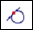

Section Sketches command bar
- Select Body step
-
Selects the bodies to use to create the section sketches.
- Select Plane step
-
Selects the plane or planar face to use to create the section sketches.
- Pattern of planes
-
Specifies the number of planes and offset distance between the planes used to create a pattern of planes with reference to the selected plane or planar face.
- Cancel/Preview/Finish
-
This button changes function as you move through the feature construction process. The Finish button constructs the feature using input provided in the other steps. After you construct the feature, you can edit it by re-selecting the appropriate step on the command bar. The Cancel button discards any input and exits the command.
- Options
-
Displays the Section Sketches Options dialog box.
- Create-From options
-
Sets the method of defining the profile plane or specifies that you want to construct the feature using an existing sketch.
-
Coincident Plane—Specifies that you want to define a plane that is coincident to an existing reference plane or a planar face on the part. When you set this option, a default X-axis and direction is applied to the new reference plane. You can use keyboard accelerators to define a different X-axis and direction for the new reference plane.
-
Plane Normal to Curve—Specifies that you want to define a plane that is perpendicular to a curve you select.
-
Plane By 3 Points—Specifies that you want to define a plane by three keypoints you select.
-
Tangent Plane—Specifies that you want to define a plane that is tangent to a curved face on the part. You can select a cylinder, cone, sphere, torus, or b-spline surface. When you set this option, you can also specify the angular rotation value. When you set this option, a default X-axis and direction is applied to the new reference plane. You can use keyboard accelerators to define a different X-axis and direction for the new reference plane.
-
- Locate Filter
-
Sets the type of keypoint on existing geometry you can select for the operation.

Locates the center or end point.

Locates any keypoint.

Locates an end point.

Locates the center point of a circle or arc.

Locates a midpoint.

Sets the tangency point option. You can select a tangent point on an analytic curved face such as a cylinder, sphere, torus, or cone.

Locates a silhouette point.

Locates an edit point.

Turns off keypoint location.
- Number of planes
-
Specifies the number of section planes you want to create.
- Offset
-
Specifies the offset distance between the planes.
- Accept

-
Accepts the selection.
- Deselect

-
Clears the selection.
- Name
-
Displays the feature name. Feature names are assigned automatically. You can edit the name by typing a new name in the box on the command bar or by selecting the feature and using the Rename command on the shortcut menu.
How do I
Create a sketch from a section curveLearn more
Reverse Engineering workflowReverse engineering example
Look up more details
Delete Mesh commandFill Holes command
Smooth Mesh command
Align command
Align command bar
Remesh command
Remesh Options dialog box
Automatic regions command
Manual regions command
Extract surfaces command
Fit surfaces command
Deviation Analysis command
Deviation Analysis command bar
Deviation Analysis Settings dialog box
Section Sketches command
Section Sketches Options dialog box
Related Topics
Align a mesh body to a coordinate systemAnalyze the deviation between two objects